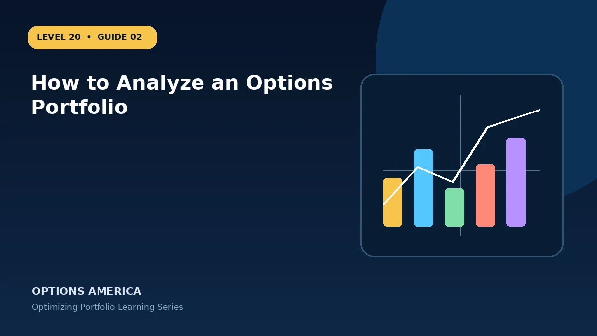

Review positions as one system using exposure, scenario P&L, liquidity and event concentration.
Understand the economic exposure
To understand the exposure, translate how to analyze an options portfolio into rights, obligations and cash flows. Start with signed quantities and contract multipliers, then aggregate risk by underlying, sector, expiration and strategy. Then calculate what happens at expiration and what can happen earlier when implied volatility, skew or liquidity changes. Both views are required for a complete risk estimate.
Measure more than one outcome
Create a small matrix rather than relying on one payoff chart: several market levels across today, the planned review date and expiration. For how to analyze an options portfolio, add nonparallel volatility changes where relevant. Compare every result with the portfolio loss limit and available buying-power reserve.
Check the changing Greeks
Delta, gamma, theta and vega are snapshots around current inputs. In how to analyze an options portfolio, the dominant Greek can change as price moves or expiration approaches. Recalculate after a meaningful move and review the portfolio total; offsetting today's delta does not neutralize tomorrow's gamma or volatility exposure.
Plan execution and liquidity
Execution belongs in the analysis, not in a footnote. Estimate entry and exit slippage for how to analyze an options portfolio, check whether each leg trades actively and understand what happens at expiration. A strategy with a small theoretical edge may have no practical edge after two trips through a wide market.
Define management before entry
Management is a sequence of new choices, not a way to erase history. Preserve the original cost and every subsequent debit or credit in how to analyze an options portfolio. Recalculate the remaining payoff after any adjustment and compare it with the alternative of closing and holding no position.
Start with the objective
Treat how to analyze an options portfolio as a decision problem before treating it as an order ticket. Review positions as one system using exposure, scenario P&L, liquidity and event concentration. Define success in dollars and time, then identify the market path that would make the position unnecessary or ineffective. This prevents a familiar strategy name from replacing analysis.
A practical example
Ten contracts with delta 0.20 represent roughly 200 share-equivalents before gamma changes the number.
This simplified example is educational and focuses on selected outcomes. Live prices also reflect time, implied volatility, skew, rates, dividends where applicable, liquidity, settlement conventions and transaction costs. Greeks and scenario values are estimates, not guarantees.
Decision checklist
Confirm the market thesis and time horizon. Calculate the full-position payoff and premium at risk. Stress price, volatility and time together. Check contract specifications and settlement. Set the maximum account-level loss, reserve capital and exit trigger. Finally, record the result after closing so the next decision is based on evidence rather than memory.
Frequently asked questions
What is the key idea behind How to Analyze an Options Portfolio?
Start with signed quantities and contract multipliers, then aggregate risk by underlying, sector, expiration and strategy.
Does the example guarantee a live-market result?
No. It is an educational scenario; live prices, volatility, liquidity, costs and contract terms can change the outcome.
What should be defined before entry?
The objective, size, maximum tolerated loss, review triggers, settlement or assignment plan and exit date.
Continue the Optimizing Portfolio cluster
Explore related guides: Portfolio Delta and Beta Weighting Guide · Portfolio Gamma Risk Explained · Portfolio Hedging With Options. For a structured sequence, use the free Level 20 – Optimizing Portfolio course.
Options and volatility products involve risk and are not suitable for every investor. This material is educational and is not investment, tax or legal advice. Verify current contract specifications with the exchange and your broker.